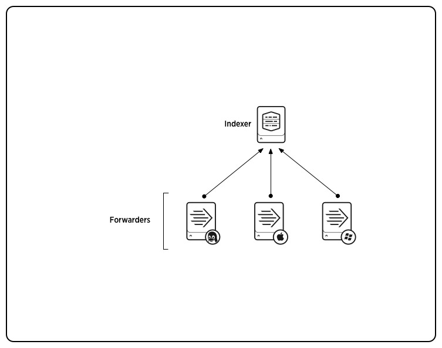

Distributed Splunk Enterprise overview
This manual describes how to distribute various components of Splunk Enterprise functionality across multiple machines. By distributing Splunk Enterprise, you can scale its functionality to handle the data needs for enterprises of any size and complexity.
In single-machine deployments, one instance of Splunk Enterprise handles the entire end-to-end process, from data input through indexing to search. A single-machine deployment can be useful for testing and evaluation purposes and might serve the needs of department-sized environments. For larger environments, however, where data originates on many machines and where many users need to search the data, you'll want to distribute functionality across multiple Splunk Enterprise instances. This manual describes how to deploy and use Splunk Enterprise in such a distributed environment.
How Splunk Enterprise scales
Splunk Enterprise performs three key functions as it moves data through the data pipeline. First, it consumes data from files, the network, or elsewhere. Then it indexes the data. (Actually, it first parses and then indexes the data, but for purposes of this discussion, we consider parsing to be part of the indexing process.) Finally, it runs interactive or scheduled searches on the indexed data.
You can split this functionality across multiple specialized instances of Splunk Enterprise, ranging in number from just a few to thousands, depending on the quantity of data you're dealing with and other variables in your environment. You might, for example, create a deployment with many instances that only consume data, several other instances that index the data, and one or more instances that handle search requests. These specialized instances are known collectively as components. There are several types of components.
For a typical mid-size deployment, for example, you can deploy lightweight versions of Splunk Enterprise, called forwarders, on the machines where the data originates. The forwarders consume data locally and then forward the data across the network to another Splunk Enterprise component, called the indexer. The indexer does the heavy lifting; it indexes the data and runs searches. It should reside on a machine by itself. The forwarders, on the other hand, can easily co-exist on the machines generating the data, because the data-consuming function has minimal impact on machine performance. This diagram shows several forwarders sending data to a single indexer:

As you scale up, you can add more forwarders and indexers. For a larger deployment, you might have hundreds of forwarders sending data to a number of indexers. You can use load balancing on the forwarders, so that they distribute their data across some or all of the indexers. Not only does load balancing help with scaling, but it also provides a fail-over capability if one of the indexers goes down. The forwarders automatically switch to sending their data to any indexers that remain alive. In this diagram, each forwarder load-balances its data across two indexers:

To coordinate and consolidate search activities across multiple indexers, you can also separate out the functions of indexing and searching. In this type of deployment, called distributed search, each indexer just indexes data and performs searches across its own indexes. A Splunk Enterprise instance dedicated to search management, called the search head, coordinates searches across the set of indexers, consolidating the results and presenting them to the user:

For larger environments, you can deploy a search head cluster, consisting of several search heads sharing configurations, job scheduling, and search artifacts. Here is a diagram of a small search head cluster, with three search heads:

These diagrams illustrate a few basic deployment topologies. You can actually combine the functions of data input, indexing, and search in a great variety of ways. For example, you can set up the forwarders so that they route data to multiple indexers, based on specified criteria. You can also configure forwarders to process data locally before sending the data on to an indexer for storage. In another scenario, you can deploy a single instance that serves as both search head and indexer, searching across not only its own indexes but the indexes on other indexers as well. You can mix-and-match Splunk Enterprise components as needed. The possible scenarios are nearly limitless.
This manual describes how to scale a deployment to fit your exact needs, whether you're managing data for a single department or for a global enterprise... or for anything in between.
Use indexer clusters for data availability
Indexer clusters are groups of Splunk Enterprise indexers configured to replicate each others' data, so that the system keeps multiple copies of all data. This process is known as index replication. By maintaining multiple, identical copies of Splunk Enterprise data, clusters prevent data loss while promoting data availability for searching.
Splunk Enterprise clusters feature automatic failover from one indexer to the next. This means that, if one or more indexers fail, incoming data continues to get indexed and indexed data continues to be searchable.
Besides enhancing data availability, clusters have other key features that you should consider when you're scaling a deployment. For example, they include a capability to coordinate configuration updates easily across all indexers in the cluster. They also include a built-in distributed search capability. For more information on indexer clusters, see "About clusters and index replication" in the Managing Indexers and Clusters of Indexers manual.
Manage your Splunk Enterprise deployment
Splunk Enterprise provides a few key tools to help manage a distributed deployment:
- Deployment server. This component provides a way to centrally manage configurations and content updates across your entire deployment. See "About deployment server" in the Updating Splunk Enterprise Instances manual.
- Distributed management console. This feature can help you manage and troubleshoot your deployment. Read "Configure the distributed management console" in the Admin Manual.
What comes next
The rest of this Overview section covers:
- How data moves through Splunk Enterprise: the data pipeline
- Scale your deployment: Splunk Enterprise components
- Components and roles
It starts by describing the data pipeline, from the point that the data enters Splunk Enterprise to when it becomes available for users to search on. Next, the overview describes how Splunk Enterprise functionality can be split into modular components. It then correlates the available Splunk Enterprise components with their roles in facilitating the data pipeline.
The remaining sections of this manual describe the Splunk Enterprise components in detail, explaining how to use them to create a distributed Splunk Enterprise deployment.
For information on capacity planning based on the scale of your deployment, read the new Capacity Planning manual.
How data moves through Splunk Enterprise: the data pipeline
Data in Splunk Enterprise transitions through several phases, as it moves along the data pipeline from its origin in sources such as logfiles and network feeds to its transformation into searchable events that encapsulate valuable knowledge. The data pipeline includes these segments:
- Input
- Parsing
- Indexing
- Search
You can assign each of these segments to a different Splunk Enterprise instance, as described here.
This diagram outlines the data pipeline:

Splunk Enterprise instances participate in one or more segments of the data pipeline, as described in "Scale your deployment".
Note: The diagram represents a simplified view of the indexing architecture. It provides a functional view of the architecture and does not fully describe Splunk Enterprise internals. In particular, the parsing pipeline actually consists of three pipelines: parsing, merging, and typing, which together handle the parsing function. The distinction can matter during troubleshooting, but does not ordinarily affect how you configure or deploy Splunk Enterprise.
The data pipeline and structured data
For certain types of structured data - data that resides in a file that has headers and fields separated by specific characters - not all components of this pipeline apply. When you collect structured data, you must configure data collection so that it arrives at the indexer in the format that you want. In environments with forwarders, this must happen at the forwarder. See "Extract data from files with headers".
Input
In the input segment, Splunk Enterprise consumes data. It acquires the raw data stream from its source, breaks it into 64K blocks, and annotates each block with some metadata keys. The keys apply to the entire input source overall. They include the host, source, and source type of the data. The keys can also include values that are used internally by Splunk Enterprise, such as the character encoding of the data stream, and values that control later processing of the data, such as the index into which the events should be stored.
During this phase, Splunk Enterprise does not look at the contents of the data stream, so the keys apply to the entire source, not to individual events. In fact, at this point, Splunk Enterprise has no notion of individual events at all, only of a stream of data with certain global properties.
Parsing
During the parsing segment, Splunk Enterprise examines, analyzes, and transforms the data. This is also known as event processing. During this phase, Splunk Enterprise breaks the data stream into individual events. The parsing phase has many sub-phases:
- Breaking the stream of data into individual lines.
- Identifying, parsing, and setting timestamps.
- Annotating individual events with metadata copied from the source-wide keys.
- Transforming event data and metadata according to Splunk Enterprise regex transform rules.
Indexing
During indexing, Splunk Enterprise takes the parsed events and writes them to the index on disk. It writes both compressed raw data and the corresponding index files.
For brevity, parsing and indexing are often referred together as the indexing process. At a high level, that's fine. But when you need to look more closely at the actual processing of data, it can be important to consider the two segments individually.
A detailed diagram that depicts the indexing pipelines and explains how indexing works can be found in "How Indexing Works" in the Community Wiki.
Search
Splunk Enterprise's search function manages all aspects of how the user sees and uses the indexed data, including interactive and scheduled searches, reports and charts, dashboards, and alerts. As part of its search function, Splunk Enterprise stores user-created knowledge objects, such as saved searches, event types, views, and field extractions.
For more information on the various steps in the pipeline, see "How indexing works" in the Managing Indexers and Clusters of Indexers manual.
Scale your deployment: Splunk Enterprise components
To accommodate your deployment topology and performance requirements, you can allocate the different Splunk Enterprise roles, such as data input and indexing, to separate Splunk Enterprise instances. For example, you can have instances that just gather data inputs, which they then forward to another, central instance for indexing. Or you can distribute indexing across several instances that coordinate with a separate instance that processes all search requests. To facilitate the distribution of roles, Splunk Enterprise can be configured into a range of separate component types, each mapping to one or more of the roles. You create most components by enabling or disabling specific functions of the full instance.
These are the component types available for use in a distributed environment:
- Indexer
- Forwarder
- Search head
- Deployment server
- License Master
- Cluster Master
All components are variations of the full Splunk Enterprise instance, with certain features either enabled or disabled, except for the universal forwarder, which is its own executable.
Indexers
The indexer is the Splunk Enterprise component that creates and manages indexes. The primary functions of an indexer are:
- Indexing incoming data.
- Searching the indexed data.
In single-machine deployments consisting of just one Splunk Enterprise instance, the indexer also handles the data input and search management functions.
For larger-scale needs, indexing is split out from the data input function and sometimes from the search management function as well. In these larger, distributed deployments, the indexer might reside on its own machine and handle only indexing (usually along with parsing), along with searching of its indexed data. In those cases, other Splunk Enterprise components take over the non-indexing/searching roles. Forwarders consume the data, indexers index and search the data, and search heads coordinate searches across the set of indexers.
For information on indexers, see the Managing Indexers and Clusters of Indexers manual, starting with the topic "About indexes and indexers".
Forwarders
One role that's typically split off from the indexer is the data input function. For instance, you might have a group of Windows and Linux machines generating data that needs to go to a central Splunk Enterprise indexer for consolidation. Usually the best way to do this is to install a lightweight instance of Splunk Enterprise, known as a forwarder, on each of the data-generating machines. These forwarders manage the data input and send the resulting data streams across the network to a Splunk Enterprise indexer, which resides on its own machine. There are two types of forwarders:
- Universal forwarders. These have a very light footprint and forward only unparsed data.
- Heavy forwarders. These have a larger footprint but can parse, and even index, data before forwarding it.
For information on forwarders, start with the topic "About forwarding and receiving" in the Forwarding Data manual.
Search heads
In situations where you have a large amount of indexed data and numerous users concurrently searching on it, it can make sense to distribute the indexing and search retrieval load across several indexers, while delegating the search management and presentation functions to a separate machine. In this type of scenario, known as distributed search, one or more Splunk Enterprise components called search heads distribute search requests across multiple indexers.
For information on search heads, see "About distributed search" in the Distributed Search manual.
Deployment server
To update a distributed deployment, you can use the Splunk Enterprise deployment server. The deployment server lets you push out configurations and content to sets of Splunk Enterprise instances (referred to, in this context, as deployment clients), grouped according to any useful criteria, such as OS, machine type, application area, location, and so on. The deployment clients are usually forwarders or indexers. For example, once you've made and tested an updated configuration on a local Linux forwarder, you can push the changes to all the Linux forwarders in your deployment.
The deployment server can cohabit a Splunk Enterprise instance with another Splunk Enterprise component, either a search head or an indexer, if your deployment is small (less than around 50 deployment clients). It should run on its own Splunk Enterprise instance in larger deployments. For more information, see "Estimate deployment server performance" in the Updating Splunk Enterprise Instances manual.
For detailed information on the deployment server, see "About deployment server" in the Updating Splunk Enterprise Instances manual.
Where to go next
While the fundamental issues of indexing and event processing remain the same no matter what the size or nature of your distributed deployment, it is important to take into account deployment needs when planning your indexing strategy. To do that effectively, you must also understand how components map to Splunk Enterprise roles.
For information on hardware requirements for scaling your deployment, see the Capacity Planning manual.
Components and roles
Each segment of the data pipeline directly corresponds to a role that one or more Splunk Enterprise components can perform. For instance, data input is a Splunk Enterprise role. Either an indexer or a forwarder can perform the data input role. For more information on the data pipeline, look here.
How components support the data pipeline
This table correlates the pipeline segments and Splunk Enterprise roles with the components that can perform them:
| Data pipeline segment | Role | Components that can perform this role |
|---|---|---|
| Data input | Data input | indexer universal forwarder heavy forwarder |
| Parsing | Parsing | indexer heavy forwarder |
| Indexing | Indexing | indexer |
| Search | Search | indexer search head |
| n/a | Managing distributed updates | deployment server |
As the table indicates, some roles can be filled by diffferent components depending on the situation. For instance, data input can be handled by an indexer in single-machine deployments, or by a forwarder in larger deployments.
For more information on components, look here.
Components in action
These are some of the common ways in which Splunk Enterprise functionality is distributed and managed.
Forward data to an indexer
In this deployment scenario, forwarders handle data input, collecting data and send it on to a Splunk Enterprise indexer. Forwarders come in two flavors:
- Universal forwarders. These maintain a small footprint on their host machine. They perform minimal processing on the incoming data streams before forwarding them on to an indexer, also known as the receiver.
- Heavy forwarders. These retain much of the functionality of a full Splunk Enterprise instance. They can parse data before forwarding it to the receiving indexer. (See "How data moves through Splunk Enterprise" for the distinction between parsing and indexing.)
Both types of forwarders tag data with metadata such as host, source, and source type, before forwarding it on to the indexer.
Forwarders allow you to use resources efficiently while processing large quantities or disparate types of data. They also enable a number of interesting deployment topologies, by offering capabilities for load balancing, data filtering, and routing.
For an extended discussion of forwarders, including configuration and detailed use cases, see "About forwarding and receiving" in the Forwarding Data manual.
Search across multiple indexers
In distributed search, Splunk Enterprise instances send search requests to other Splunk Enterprise instances and merge the results back to the user. This is useful for a number of purposes, including horizontal scaling, access control, and managing geo-dispersed data.
The Splunk Enterprise instance that manages search requests is called the search head. The instances that maintain the indexes and perform the actual searching are indexers, called search peers in this context.
For an extended discussion of distributed search, including configuration and detailed use cases, see "About distributed search" in the Distributed Search manual.
Manage distributed updates
When dealing with distributed deployments consisting potentially of many forwarders, indexers, and search heads, the Splunk Enterprise deployment server simplifies the process of configuring and updating Splunk Enterprise components, mainly forwarders and indexers. Using the deployment server, you can group the components (referred to as deployment clients in this context) into server classes, making it possible to push updates based on common characteristics.
A server class is a set of Splunk Enterprise instances that share configurations. Server classes are typically grouped by OS, machine type, application area, location, or other useful criteria. A single deployment client can belong to multiple server classes, so a Linux universal forwarder residing in the UK, for example, might belong to a Linux server class and a UK server class, and receive configuration settings appropriate to each.
For an extended discussion of deployment management, see "About deployment server" in the Updating Splunk Enterprise Instances manual.
For more information
In summary, these are the fundamental components and features of a Splunk Enterprise distributed environment:
- Indexers. See "About indexes and indexers" in the Managing Indexers and Clusters of Indexers manual.
- Forwarders. See "About forwarding and receiving" in the Forwarding Data manual.
- Search heads. See "About distributed search" in the Distributed Search manual.
- Deployment server. See "About deployment server" in the Updating Splunk Enterprise Instances manual.
For guidance on where to configure various Splunk Enterprise settings, see "Configuration parameters and the data pipeline" in the Admin Manual. That topic lists key configuration settings and the data pipeline segments they act upon. If you know which components in your Splunk Enterprise topology handle which segments of the data pipeline, you can use that topic to determine where to configure the various settings. For example, if you use a search head to handle the search segment, you'll need to configure any search-related settings on the search head and not on your indexers.
Implement a distributed deployment
This topic provides a high-level framework for implementing a basic multi-tiered distributed environment such as this:
To implement this sort of distributed environment, you need to install and configure three types of components:
- Indexers
- Forwarders (typically, universal forwarders)
- Search head(s)
Install and configure the indexers
By default, all full Splunk Enterprise instances serve as indexers. For horizontal scaling, you can install multiple indexers on separate machines.
To learn how to install a Splunk Enterprise instance, read the Installation Manual.
Once you've installed the indexers, see the Managing Indexers and Clusters of Indexers manual for information on configuring each indexer to meet the needs of your specific deployment.
To prepare your indexers to receive data from forwarders, see "Enable a receiver" in the Forwarding Data manual. In addition, if the indexers will be consuming some data inputs directly, rather than through forwarders, see the Getting Data In manual for information on configuring data inputs. The diagram in this topic shows two direct inputs, one from a firewall and another from a data router.
If data availability, data fidelity, and data recovery are key issues for your deployment, you should consider deploying an indexer cluster, rather than a series of individual indexers. For further information, see "About indexer clusters and index replication" in the Managing Indexers and Clusters of Indexers manual.
Install and configure the forwarders
A typical distributed deployment has a large number of forwarders feeding data to a few indexers. For most forwarding purposes, the universal forwarder is the best choice. The universal forwarder is a separate downloadable from the full Splunk Enterprise instance.
To learn how to install and configure forwarders, read the Forwarding Data manual.
Then read the Getting Data In manual for information on configuring each forwarder's data inputs.
Install and configure the search heads
You can install one or more search heads to handle your distributed search needs. Search heads are full Splunk Enterprise instances that have been specially configured to managed searches across a set of indexers. Users run searches by connecting to the search head's Splunk Web.
To learn how to configure a search head, read the Distributed Search manual.
Other deployment tasks
You need to configure Splunk Enterprise licensing by designating a license master. See the chapter Configure Splunk Enterprise licenses in the Admin Manual for more information.
You can use the Splunk Enterprise deployment server to simplify the job of updating the deployment components. For details on how to configure a deployment server, see the Updating Splunk Enterprise Instances manual.
What happened to the rest of this manual?
Forwarding data
Starting with Splunk 6.0, the topics on forwarding and receiving, previously located in this manual, now reside in their own manual, Forwarding Data.
Distributed search
Starting with Splunk 6.0, the topics on distributed search and search heads, previously located in this manual, now reside in their own manual, Distributed Search.
Hardware capacity planning
Starting with Splunk 6.2, the topics on hardware capacity planning, previously located in this manual, now reside in their own manual, Capacity Planning.
Upgrading Splunk Enterprise Instances
The deployment server is the Splunk Enterprise built-in capability for upgrading Splunk Enterprise instances.
Starting with Splunk 6.0, the topics on the deployment server, previously located in this manual, now reside in their own manual, Upgrading Splunk Enterprise Instances.
Common deployment architectures
Common deployment architecture overview
This chapter serves as a guide to the types of architectures common to deployments of various sizes. This material can help you better understand initial and future requirements. It is useful for scoping your needs for a new deployment, as well as preparing for the growth of an existing Splunk Enterprise deployment. It illustrates how Splunk Enterprise deployments typically evolve and scale, as the size and variety of use cases grow.
Splunk Enterprise deployments range from single-server departmental deployments, indexing a few gigabytes of data a day and servicing just a few users searching the data, to large enterprise deployments distributed across multiple data centers, with indexing requirements in the terabyte range and searches performed by hundreds of people.
This chapter describes several archetypal deployments (categorized by size) and covers:
- Types and numbers of components
- Types and numbers of users
- Data size and input types
- Design considerations
- Fundamental administration issues such as availability, recoverability, accessibility, and configuration management
- Staffing requirements
Deployment topologies
To help with your planning, this topic describes a scaled series of representative topologies:
- Departmental
- Small enterprise
- Medium enterprise
- Large enterprise
These representations are just points on a continuous scale, ranging from single-server deployments to deployments that provide enterprise-wide coverage for a large number of use cases.
In addition, the topic includes a brief section on indexer cluster topologies. Indexer clusters can be implemented at any of the enterprise levels.
Note: The terms "small enterprise", "medium enterprise", etc., do not specifically address the size of the enterprise using Splunk; rather, they are indicators of the breadth and depth of the functions Splunk supports in the enterprise. As awareness of the value Splunk can provide to an organization grows with continued success, the size of a deployment also typically grows. So, for example, a Fortune 500 company might start with a departmental-level, single-server Splunk installation for a very specific use case, and then, over time, transition through small enterprise and medium enterprise, to eventually adopt a large enterprise deployment providing key value to organizations and use cases distributed throughout the company.
Departmental
A departmental deployment is, as the term implies, designed to meet the relatively simple needs of a single department within an organization. These deployments typically consist of:
- A single Splunk instance, combining the functionality of both an indexer and a search head.
- Indexing volume of under 20GB/day.
- A relatively small number of forwarders sending data to the instance, typically less than 10 and rarely exceeding 100.
- Updates handled either manually or via a deployment server resident on the indexer.
- A few users, typically less than 10.
This diagram shows the components of a departmental deployment:
Small enterprise
A small enterprise deployment is the next step in continuum of Splunk deployments, providing a small degree of horizontal scaling. These deployments typically consist of:
- Several Splunk instances; for example, two or three indexers and a single search head that allows users to run combined searches across all the indexers.
- Indexing volume between 20-100GB/day.
- Up to several hundred forwarders feeding data to the indexers. The forwarders typically make use of load balancing to distribute the data across the indexers.
- Updates handled either manually or via a deployment server resident on the search head.
- A larger number of users, but generally well under 100.
This diagram shows the components of a small enterprise deployment:
Medium enterprise
A medium enterprise deployment is further along the growth curve in Splunk deployments, with a larger degree of horizontal scaling. These deployments might consist of:
- A larger number of Splunk instances; for example, five or more indexers and a couple of search heads.
- Indexing volume between 100-300GB/day.
- Up to a few thousand forwarders feeding load-balanced data to the indexers.
- Updates handled by a separate configuration management tool, either a stand-alone deployment server or a third party tool like Puppet or Chef.
- A larger number of users, possibly numbering a hundred or more.
This diagram shows the components of a medium enterprise deployment:
Large enterprise
A large enterprise deployment handles functions across the enterprise, spanning multiple data centers. These deployments might consist of:
- A large number of Splunk instances; for example, several dozen indexers and as many as 10 search heads.
- Indexing volume ranging from 300GB to many TBs per day.
- Many thousands of forwarders.
- Updates handled by a separate configuration management tool, either a stand-alone deployment server or a third party tool like Puppet or Chef.
- A large number of users, potentially numbering in the several hundreds.
This diagram shows the components of a large enterprise deployment:
Indexer clusters
Although the topologies described earlier do not address index replication, you can implement indexer clusters for any of the enterprise-level topologies, according to your availability requirements. Doing so will require an increase in the number of Splunk Enterprise instances beyond the numbers mentioned below. For example, here is a representative indexer cluster topology for a small enterprise deployment:
This is an example of a small indexer cluster with three peer nodes (indexers) and a replication factor of 3. Since the replication factor of 3 means that all data will be replicated across all three peers, this scenario essentially replaces a very small enterprise with one to two indexers. Because of the way clusters store data, the cluster would not require fully three times as much storage as its non-cluster equivalent.
As the diagram indicates, you can scale a cluster topology in the same way that you scale any non-cluster Splunk deployment, adding peers and forwarders as needed. You can also add additional search heads.
For more information, read "About indexer clusters and index replication" in the Managing Indexers and Clusters of Indexers manual.
Search head clusters
You can combine multiple search heads into a search head cluster. This allows the search heads to share configurations, job scheduling, and search artifacts. As with indexer clusters, you can employ search head clusters for any enterprise-level topology. Here is a relatively small-scale search head cluster:
This cluster consists of three search heads, with a load balancer to coordinate user requests and several search peers that hold the indexed data. See "About search head clustering" in the Distributed Search manual.
In place of multiple independent search peers, you can optionally deploy an indexer cluster.
How deployments scale
The characteristics of a deployment vary according to the size. (Deployment size, for the purposes of this discussion, is based on daily indexing volume.) This topic attempts to identify, in broad terms, some key characteristics and considerations and indicate how they change as a deployment scales.
Note: Size is only one of many factors driving the needs and architecture of a deployment. The numbers presented in these tables are mere guidelines to help with planning. In addition, the scenarios described here are simply points on a size-based continuum. Actual numbers will vary considerably for each specific deployment.
For details on hardware capacity planning and deployment scaling, see the Capacity Planning manual.
Primary characteristics
The characteristics of a deployment change as it grows in size. This table gives you some idea of what to expect, with information on the Splunk components you'll need to deploy to meet the needs.
| Departmental | Small enterprise | Medium enterprise | Large enterprise | |
|---|---|---|---|---|
| Indexing volume (daily) | 0-20GB | 20-100GB | 100-300GB | 300GB-1TB+ |
| # of forwarders | Median < 10; maximum 100 | Median in the 10's; maximum in the 100's | Median in the 10's; maximum in the low 1000's | Median in the 10's; maximum in the 1000's |
| # of users | Median < 10 | Median in the 10's | Median in the 10's; maximum in the low 100's | Median in the 10's; maximum 500+ |
| # of apps (pre-packaged and customer-developed, combined) | 1-10 | 1-10 | 1-20+ | 10-50 |
| Indexer component | 1 indexer | 2-3 indexers | 4-9 indexers | 10+ indexers |
| Search head component | Combined with indexer | 1 stand-alone search head | 2 search heads | 3+ search heads |
| Configuration management function | Manual configuration or deployment server | Manual configuration or deployment server | Deployment server or 3rd party tool | Deployment server or 3rd party tool |
Design considerations
This table summarizes some of the issues you need to consider when designing your deployment.
| Departmental | Small enterprise | Medium enterprise | Large enterprise | |
|---|---|---|---|---|
| Forwarder issues | Management, monitoring | Load balancing, management, monitoring | Load balancing, management, monitoring, intermediate forwarders | Load balancing, management, monitoring, intermediate forwarders |
| Search issues | User counts, alerts, apps | Search head/indexer knowledge management, user counts | Search head/indexer knowledge management, user counts, search head clustering, job servers | Search head/indexer knowledge management, user counts, search head clustering, job servers |
| Scheduled search workload | Alerts, app/dashboard dependent, summary searches | Alerts, app/dashboard dependent, summary searches | Alerts, app/dashboard dependent, summary searches, job server | Alerts, app/dashboard dependent, summary searches, job server, API/SDK |
| Input types | Network, scripted | Network, scripted, batch, integrations | Network, scripted, batch, integrations | Network, scripted, batch, integrations |
| Availability | Platform-dependent (RAID, power supplies) | Data fabric (forwarder load balancing, storage, index replication) | User interface (search head clustering, load balancers); data fabric (forwarder load balancing, storage, index replication) | User interface (search head clustering, load balancers); data fabric (forwarder load balancing, storage, index replication) |
| Recoverability | Backup, retention | Backup, index replication, bucket/index restoration | Backup, index replication, bucket/index restoration | Backup, index replication, bucket/index restoration |
| Accessibility | Local vs. enterprise authentication | Authentication method | Authentication method | Authentication method |
| Staffing | Admin: 0.5-1 person; search/dashboard/appdev/ knowledge manager: 0.25-1 person | Admin: 0.5-1 person; search/dashboard/appdev/ knowledge manager: 0.5-1.5 persons | Admin/architect: 1-2 persons; knowledge manager: 0.5-2 persons; search/dashboard/appdev: 1-3 persons; program/project manager: 1 person | Admin: 2-4+ persons; architect: 1+ persons; knowledge manager: 2-5+ persons; search/dashboard/appdev: 2-6+ persons; program manager: 1 person; project manager: 0.5-2 persons |
For information regarding training opportunities and professional services offerings, contact your Splunk sales representative.
Upgrade your deployment
Upgrade your distributed environment
This topic discusses the process of upgrading components of a distributed Splunk Enterprise deployment.
Upgrading a distributed Splunk Enterprise environment presents challenges over upgrading an a single-instance Splunk Enterprise installation. For the purposes of reducing downtime and ensuring no data is lost, we strongly recommend that you upgrade your components in a specific order. This order is described in the instructions below.
Note: This is a high-level guidance on upgrading Splunk Enterprise in a distributed environment. Distributed environments can vary widely. Therefore, this topic cannot provide detailed step-by-step procedures. If you have additional questions about upgrading your distributed Splunk environment after reading this topic, you can log a case via the Splunk Support Portal.
Cross-version compatibility between distributed components
For information on compatibility between differerent versions of search heads and search peers (indexers), see "System requirements and other deployment considerations for distributed search" in the Distributed Search manual.
For information on compatibility between indexers and forwarders, see "Compatibility between forwarders and indexers" in the Forwarding Data manual.
Test your apps prior to the upgrade
Before upgrading your distributed environment, make sure that all of your Splunk apps work on the version of Splunk Enterprise that you plan to upgrade to.
Important: This procedure is required if you are upgrading a distributed environment with a search head pool, because pooled search heads use shared storage space for apps and configurations.
To ensure that your apps work on the desired upgraded version of Splunk Enterprise:
1. On a reference machine, install the full version of Splunk Enterprise that you currently run.
Note: You can also use an existing Splunk Enterprise instance, provided that it is not indexing relevant data and is at the same version level as the other instances in your environment.
2. Install the apps on this instance.
3. Confirm that the apps work as expected.
4. Upgrade the instance to the desired version.
5. Test the apps again to make sure they work as desired in the new version.
If the apps work as expected, you can move them to the appropriate location during the upgrade of your distributed environment:
- If you use non-pooled search heads, move the apps to
$SPLUNK_HOME/etc/appson each search head during the search head upgrade process. - If you use pooled search heads, move the apps to the shared storage location where the pooled search heads expect to find the apps.
Caution: The migration utility warns you of apps that need to be copied to shared storage for pooled search heads when you upgrade them. It does not, however, copy them for you. You must manually copy all updated apps - including apps that ship with Splunk Enterprise (such as the Search app and the data preview feature, which is implemented as an app) - to shared storage during the upgrade process. Failure to do so can cause problems with the user interface after the upgrade is complete.
Upgrade a distributed environment with multiple indexers and non-pooled search heads
To maintain availability, Splunk recommends that, when upgrading your distributed environment with multiple indexers and non-pooled search heads, that you upgrade the search heads first, then upgrade the indexing infrastructure that supports the search heads. If you have deployment servers in the environment, be sure to disable those prior to upgrading your search heads.
To upgrade a distributed environment with multiple indexers and non-pooled search heads:
Prepare the upgrade
1. Confirm that any apps that the non-pooled search heads use will work on the upgraded version of Splunk, as described in "Test your apps prior to the upgrade" in this topic.
2. If you use a deployment server in your environment, disable it temporarily. This prevents the server from distributing invalid configurations to your other components.
3. Upgrade your deployment server, but do not restart it.
Upgrade the search heads
4. Disable and upgrade one of the search heads. Do not allow it to restart.
5. After you upgrade the search head, place the confirmed working apps into the $SPLUNK_HOME/etc/apps directory of the search head.
6. Restart this search head and test for operation and functionality.
7. If there are no problems with the search head, then disable and upgrade the remaining search heads, one by one. Repeat this step until you have reached the last search head in your environment. Optionally, you can test each search head for operation and functionality after you bring it up.
8. Once you have upgraded the last search head, test all of the search heads for operation and functionality.
Upgrade the indexers
9. Disable and upgrade your indexers, one by one. You can restart the indexers immediately after you upgrade them.
10. Test your search heads to ensure that they find data across all your indexers.
11. After all indexers have been upgraded, restart your deployment server.
Upgrade a distributed environment with multiple indexers and pooled search heads
If your distributed environment has pooled search heads, the process to upgrade the environment becomes significantly more complex. If your organization has restrictions on downtime, this type of upgrade is best done within a maintenance window.
The key concepts to understand about upgrading this kind of environment are:
- Pooled search heads must be enabled and disabled as a group.
- The version of Splunk Enterprise on all pooled search heads must be the same.
- Apps and configurations that the search heads use must be tested prior to upgrading the search head pool.
If you have additional concerns about the guidance shown here, you can log a case via the Splunk Support Portal.
To upgrade a distributed Splunk environment with multiple indexers and pooled search heads:
Prepare the upgrade
1. Confirm that any apps that the pooled search heads use will work on the upgraded version of Splunk Enterprise, as described in "Test your apps prior to the upgrade" in this topic.
2. If you use a deployment server in your environment, disable it temporarily. This prevents the server from distributing invalid configurations to your other components.
3. Upgrade your deployment server, but do not restart it.
Upgrade the search head pool
4. Designate a search head (Search Head #1) in your search head pool to upgrade as a test for functionality and operation.
Note: Search heads must be removed from the search head pool temporarily before you upgrade them. This must be done for several reasons:
- To prevent changes to the apps and/or user objects hosted on the search head pool shared storage.
- To stop the inadvertent migration of local apps and system settings to shared storage during the upgrade.
- To ensure that you have a valid local configuration to use as a fallback, should a problem occur during the upgrade.
If problems occur as a result of the upgrade, search heads can be temporarily used in a non-pooled configuration as a backup.
5. Bring down all of the search heads in your environment.
Note: Search capability will be unavailable at this time, and will remain unavailable until you restart all of the search heads after upgrading.
6. Place the confirmed working apps (as tested in Step 1) in the search head pool shared storage area.
7. Remove Search Head #1 from the search head pool.
Note: Review "Configure search head pooling" in the Distributed Search manual for instructions on how to enable and disable search head pooling on each search head.
8. Upgrade Search Head #1.
9. Restart Search Head #1 and test for operation and functionality.
Note: In this case, 'operation and functionality' means that the instance starts and that you can log into it. It does not mean that you can use apps or objects hosted on shared storage. It also does not mean distributed searches will run correctly.
10. If the upgraded Search Head #1 functions as desired:
- a. Bring it down.
- b. Copy the apps and user preferences from the search head to the shared storage.
- c. Add it back to the search head pool.
- d. Restart the search head.
11. Upgrade the remaining search heads in the pool, one by one, following Steps 7 through 10 above.
Caution: Remove each search head from the search head pool before you upgrade, and add them back to the pool after you upgrade. While it is not necessary to confirm operation and functionality of each search head, only one search head at a time can be up during the upgrade phase. Do not start any of the other search heads until you have upgraded all of them.
12. Once you have upgraded the last search head in the pool, then restart all of them.
13. Test all search heads for operation and functionality across all of the apps and user objects that are hosted on the search head pool.
14. Test distributed search across all of your indexers.
Upgrade the indexers
15. Once you have confirmed that your search heads are functioning as desired, choose an indexer to keep the environment running (Indexer #1), and another to upgrade initially (Indexer #2).
Note: If you do not have downtime concerns, you do not need to perform this step.
16. Bring down all of the indexers except Indexer #1.
Note: If you do not have downtime concerns, you can bring down all of the indexers.
17. Upgrade Indexer #2.
18. Bring up Indexer #2 and test for operation and functionality.
Note: For information on version compatibility between search heads and indexers, see "System requirements and other deployment considerations for distributed search" in the Distributed Search manual.
19. Once you have confirmed proper operation on Indexer #2, bring down Indexer #1.
20. Upgrade Indexer #1 and all of the remaining indexers, one by one. You can restart the indexers immediately after you upgrade them.
21. Confirm operation and functionality across all of your indexers.
22. Restart your deployment server, and confirm its operation and functionality.
Upgrade forwarders
When upgrading your distributed environment, you can also upgrade any universal forwarders in that environment. This is not required, however, and you might want to consider whether or not you need to. Forwarders are always compatible with later version indexers, so you do not need to upgrade them just because you've upgraded the indexers they're sending data to.
To upgrade universal forwarders, review the following topics in this manual:
Upgrade the Windows universal forwarder
Relocated to the Forwarding Data manual
The instructions on how to upgrade the Windows universal forwarder have been moved to the Forwarding Data manual.
Read that topic to learn how to upgrade the universal forwarder on Windows.
Upgrade the universal forwarder for *nix systems
Relocated to the Forwarding Data manual
The instructions on how to upgrade the Unix universal forwarder have been moved to the Forwarding Data manual.
Read that topic to learn how to upgrade the universal forwarder on *nix.